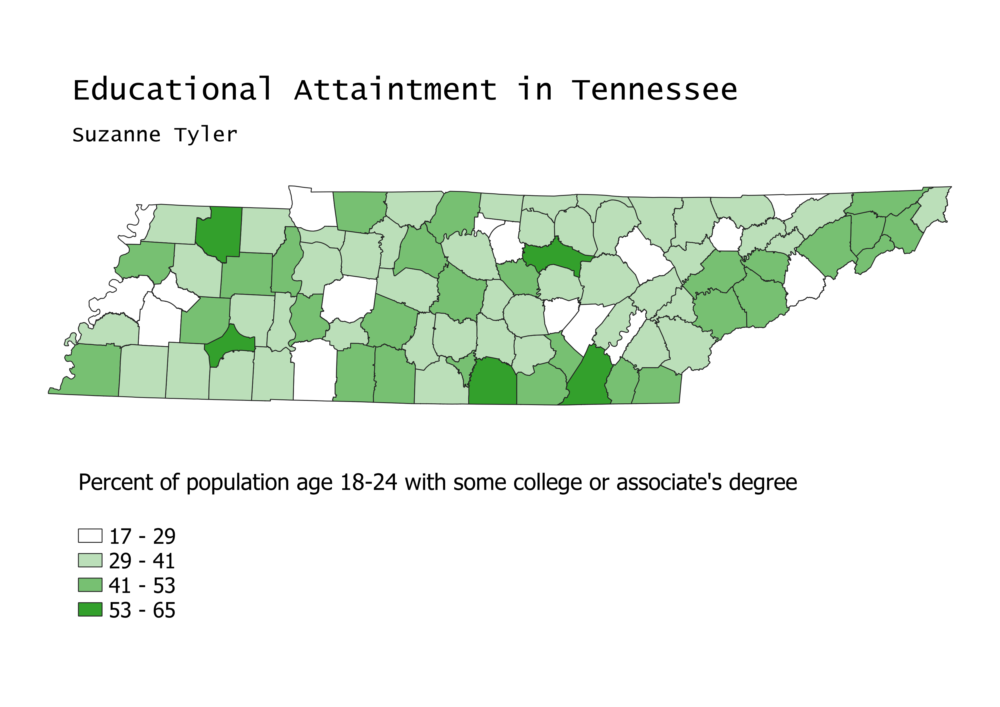

Tennessee Educational Attainment Choropleth
Suzanne Tyler
GEOG 370-006
Homework 6
February 23, 2022
Map
This map was made using county vector data and population information from the census. I have linked my sources below. The map is projected in ESRI:102736, which is the state plane projection for Tennessee.

Data Sources
County Vector Data
Educational Attainment Census Data
Cleaned Excel File of Educational Attainment Data